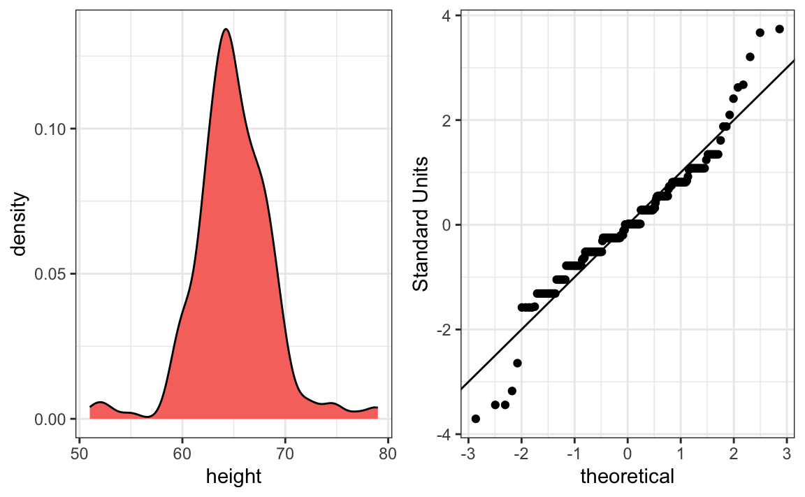

library(dslabs)
f <- with(heights, height[sex == "Female"])
m <- with(heights, height[sex == "Male"])
qqplot(f - mean(f), m - mean(m))
abline(0,1)3 Comparing Groups
So far, we have focused on summarizing the distribution of a single variable, describing its center, spread, and shape. In practice, however, one of the most common goals of data analysis is comparison: we want to know how one group differs from another, how a treatment compares to a control, or how outcomes vary across conditions. Comparing groups is often the first step toward uncovering relationships and understanding sources of variation.
The tools we developed for describing distributions, histograms, boxplots, and numerical summaries such as the mean and median, extend naturally to comparisons. By examining these summaries within subgroups or by comparing quantiles across distributions, we can reveal patterns that a single summary might conceal.
In this chapter, we explore two key techniques for comparing distributions:
- Quantile–quantile, which provide a systematic way to compare the shapes of two distributions, including how observed data differ from theoretical models such as the normal distribution.
- Stratification, which involves dividing data into meaningful subgroups and examining each distribution separately.
Together, these methods complete our descriptive toolkit, bridging the transition from exploring single variables to analyzing relationships between variables.
3.1 Quantile-quantile plots
A systematic way to compare two distributions is to compare their cumulative distribution functions (CDFs). A practical way to do this is through their quantiles.
For a proportion \(0 \leq p \leq 1\), the \(p\)-th quantile of a distribution \(F(x)\) is the value \(q\) such that \(F(q) = p\), or \(q = F^{-1}(p)\). For example, \(p = 0\) gives the minimum, \(p = 0.5\) gives the median, and \(p = 1\) gives the maximum.
The notation \(Q(p) = F^{-1}(p)\) or equivalently \(q_p = F^{-1}(p)\) is commonly used in textbooks to denote the \(p\)-th quantile of a distribution.
A quantile–quantile plot (qqplot) provides a visual way to compare two distributions, say \(F_1(x)\) and \(F_2(x)\), by plotting the quantiles of one distribution against the corresponding quantiles of the other. Specifically, if we define \[ Q_1(p_i) = F_1^{-1}(p_i) \quad \text{and} \quad Q_2(p_i) = F_2^{-1}(p_i) \] for a set of probabilities \(p_1, \dots, p_m\), then the qqplot is created by plotting the pairs \[ \{Q_1(p_i),\, Q_2(p_i)\}, \quad i = 1, \dots, m. \] A common choice for these probabilities is \[ p_i = \frac{i - 0.5}{n}, \quad i = 1, \dots, n, \] where \(n\) is the sample size of the smaller dataset. Subtracting \(0.5\) prevents evaluating quantiles at \(p = 0\) or \(p = 1\), which for some theoretical distributions, such as the normal, would correspond to \(-\infty\) or \(+\infty\).
The most common use of qqplots is to assess whether two distributions, \(F_1(x)\) and \(F_2(x)\), are similar. If the points in the qqplot fall approximately along the identity line, it suggests that the two distributions have a similar shape.
Example
Up to now we have only examined the distribution of heights for males. We expect that the distribution for females to be similar except for 2-3 inch shift due to males being taller than females, on average. A qqplot confirms this:
We see that in the middle of the plot the points are on the identiy line, confirming the distirbutiosn are similar except for the shift. However, for the smaller and larger quantiles we see a deviation from the line. We come back to this observation in Section 3.3.
Percentiles
Percentiles are special cases of quantiles that are commonly used. The percentiles are the quantiles you obtain when setting the \(p\) at \(0.01, 0.02, ..., 0.99\). For example, we refer to the case of \(p = 0.25\) as the 25th percentile, representing a value below which 25% of the data falls. The most famous percentile is the 50th, also known as the median. Another special case that receives a name are the quartiles, which are obtained when setting \(p = 0.25,0.50\), and \(0.75\).
3.2 Assessing normality with QQ plots
A common use of qqplots is to assess whether data follow a normal distribution.
The cumulative distribution function (CDF) of the standard normal is written as \(\Phi(x)\), giving the probability that a normal random variable is less than \(x\). For example, \(\Phi(-1.96) = 0.025\) and \(\Phi(1.96) = 0.975\). In R, this is computed with pnorm:
pnorm(-1.96)
#> [1] 0.025The inverse of \(\Phi\), denoted \(\Phi^{-1}(p)\), provides the theoretical quantiles. For instance, \(\Phi^{-1}(0.975) = 1.96\) which we compute with qnorm:
qnorm(0.975)
#> [1] 1.96By default, pnorm and qnorm assume the standard normal distribution (mean 0, SD 1). You can specify different parameters with the mean and sd arguments:
qnorm(0.975, mean = 69, sd = 3)
#> [1] 74.9For observed data, we can compute sample quantiles using the quantile function. For example, here are the quartiles of male heights:
To check whether these data are approximately normal, we can construct a QQ plot following these steps:
- Define a vector of proportions \(p_1, \dots, p_m\).
- Compute sample quantiles from the data.
- Compute theoretical quantiles from a normal distribution with the same mean and SD as the data.
- Plot the two sets of quantiles against each other.
Example:
p <- seq(0.05, 0.95, 0.05)
sample_quantiles <- quantile(x, p)
theoretical_quantiles <- qnorm(p, mean = mean(x), sd = sd(x))
plot(theoretical_quantiles, sample_quantiles)
abline(0, 1)Because the points fall close to the identity line, we conclude that the normal distribution provides a good approximation for this dataset.
The code becomes simpler if we standardize the data first:
R provides built-in functions for generating qqplots that compare observed data to a normal distribution:
These functions use the average and standard deviation of the data x to define the theoretical normal distribution used for the x-axis values. In other words, the plotted line represents what we would expect if the data were normally distributed with the same mean and spread as the observed sample.
And equivalently with ggplot2:
By default, both qqnorm and geom_qq use all \(n\) quantiles, with \(p_i = (i - 0.5)/n\). Because of this default behavior, large datasets can produce thousands of overlapping points that appear as a solid line. In such cases, it’s better to compute and plot a smaller, representative set of quantiles manually rather than relying on the defaults in qqplot or qqnorm.
3.3 Stratification
In data analysis, we often divide observations into groups based on the values of one or more variables associated with those observations. For example, we can divide the height values into groups based on a sex variable: females and males. We call this procedure stratification and refer to the resulting groups as strata.
Stratification is common in data visualization because we are often interested in how the distribution of variables differs across different subgroups.
Using the histogram, density plots, and qqplots, we have become convinced that the male height data is well approximated with a normal distribution. In this case, we report back to ET a very succinct summary: male heights follow a normal distribution with an average of 69.3 inches and a SD of 3.6 inches. With this information, ET will have a good idea of what to expect when he meets our male students. However, to provide a complete picture we need to also provide a summary of the female heights.
We learned that boxplots are useful when we want to quickly compare two or more distributions. Here are the heights for females and males:
The plot immediately reveals that males are, on average, taller than females. The standard deviations appear to be similar. But does the normal approximation also work for the female height data collected by the survey? We expect that they will follow a normal distribution, just like males. However, exploratory plots reveal that the approximation is not as useful:

We see something we did not see for the males: the density plot has a second bump. Also, the qqplot shows that the highest points tend to be taller than expected by the normal distribution. Finally, we also see five points in the qqplot that suggest shorter than expected heights for a normal distribution. When reporting back to ET, we might need to provide a histogram rather than just the average and standard deviation for the female heights.
We have noticed what we didn’t expect to see. If we look at other female height distributions, we do find that they are well approximated with a normal distribution. So why are our female students different? Is our class a requirement for the female basketball team? Are small proportions of females claiming to be taller than they are? Another, perhaps more likely, explanation is that in the form students used to enter their heights, Female was the default sex and some males entered their heights, but forgot to change the sex variable. In any case, data visualization has helped discover a potential flaw in our data.
Regarding the five smallest values, note that these are:
Because these are reported heights, a possibility is that the student meant to enter 5'1", 5'2", 5'3" or 5'5".
3.4 Exercises
1. Study the following boxplots showing population sizes by country:
Which continent has the country with the biggest population size?
2. Which continent has the largest median population size?
3. What is median population size for Africa to the nearest million?
4. What proportion of countries in Europe have populations below 14 million?
- 0.99
- 0.75
- 0.50
- 0.25
5. If we use a log transformation, which continent shown above has the largest interquartile range?
6. Define variables containing the heights of males and females as follows:
library(dslabs)
male <- heights$height[heights$sex == "Male"]
female <- heights$height[heights$sex == "Female"]How many measurements do we have for each?
7. Suppose we can’t make a plot and want to compare the distributions side by side. We can’t just list all the numbers. Instead, we will look at the percentiles. Create a five row table showing female_percentiles and male_percentiles with the 10th, 30th, 50th, 70th, & 90th percentiles for each sex. Then create a data frame with these two as columns.
8. Use a qqplot to demonstrate that murder rates
- Remove DC, then generate qqplot to see if the rate follow a normal distribution within each of the four region.